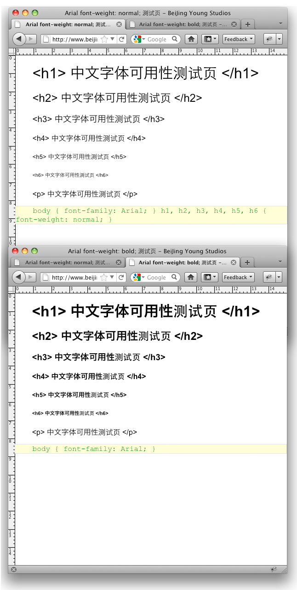

2010年云字体的应用如火如荼，汉语庞大的字库完全可以打消你尝试这一应用的念头。也许就像 妮可-沙利文 谈面向对象 CSS 时所说的一样，我们面前其实拥有一个巨大的烂摊子。
当你在使用 Opera 桌面浏览器浏览中文页面，是否发现汉字的渲染无比丑陋？这个测试就源自这里，当然这一问题不仅仅局限于这个浏览器，Opera Engineer 不可能因为这个问题换掉渲染引擎，况且这一问题通过 CSS 的一些修正是可以有所改观的。由于各个不同的浏览器渲染引擎各不相同，本测试的最终结论仅供参考。首先看下面的屏幕截图：
Arial显示中文字体宽度设置对比图

其实该测试名称 - ”中文字体可用性测试“，不如说是否应该在 CSS 中，给与 h1 - h6 标签 font-weight: normal; 这一属性。首先看看中文热门站点都在使用什么字体：
日期：2/18/2011 Alexa 前十名中文站点

- 百度 - font-family: arial;
- 腾讯 - font-family: "宋体", "Arial Narrow";
- 淘宝 - font-family: 'Tahoma','simsun'; font-family: tahoma, arial, 宋体, sans-serif;
- 新浪 - font-family: "宋体";
- Google.HK - font-family: arial, sans-serif;
- 网易 - font-family: "宋体", san-serif;
- 搜狐 - font-family: '宋体';
- Google - font-family: arial, sans-serif;
- 优酷 - font-family: arial, helvetica, verdana, tahoma, sans-serif;
- 搜搜 - font-family: arial;
字体使用率 ： Arial = 6, sans-serif, 宋体 = 5, Tahoma = 3, 其他字体 = 1.
题外话：在统计字体时发现 - 淘宝网使用了大量的 HTML5 新特性，如果想大量尝试新技术，相信淘宝会给与很好的发展空间。
除了热门站点常用字体，最后一个为继承属性。下列表单加入一些前端开发人员常用字体用于测试使用：
- Arial : 400, 500, 600, 700
- 宋体 : 400, 500, 600, 700
- sans-serif : 400, 500, 600, 700
- serif : 400, 500, 600, 700
- Tahoma : 400, 500, 600, 700
- Verdana : 400, 500, 600, 700
- Lucida Grande : 400, 500, 600, 700
- Cambria : 400, 500, 600, 700
- Georgia : 400, 500, 600, 700
- Helvetica : 400, 500, 600, 700
- Helvetica Neue : 400, 500, 600, 700
- Courier New : 400, 500, 600, 700
- inherit : 400, 500, 600, 700
本测试最终结论 - 中文字体最完美的大小为 ： 小于16px - 给与正常宽度，渲染问题出现几率最小。
h1, h2, h3, h4, h5, h6 { font-weight: normal !important; } 在中文页面 CSS 设置这一属性非常有必要。
最终结论，仅供参考！